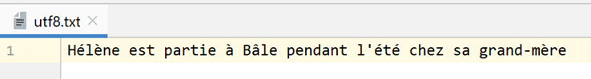
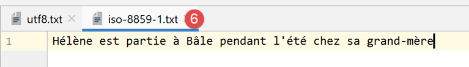

7. Text files

7.1. Script [fic_01]: reading/writing a text file
The following script illustrates an example of working with text files:
# imports
import sys
# creation and sequential processing of a text file
# this is a set of lines of the form login:pwd:uid:gid:infos:dir:shell
# each line is put into a dictionary in the form login => uid:gid:infos:dir:shell
# --------------------------------------------------------------------------
def affiche_infos(dico: dict, clé: str):
# displays the value associated with key in the dico dictionary if it exists
if clé in dico.keys():
# displays the value associated with the key
print(f"{clé} : {dico[clé]}")
else:
# key is not a dictionary key dico
print(f"la clé [{clé}] n'existe pas")
# main -----------------------------------------------
# set the file name
FILE_NAME = "./data/infos.txt"
# creating and filling text files
fic = None
try:
# open file for writing (w=write)
fic = open(FILE_NAME, "w")
# generate arbitrary content
for i in range(1, 101):
# a line
ligne = f"login{i}:pwd{i}:uid{i}:gid{i}:infos{i}:dir{i}:shell{i}"
# is written to the text file
fic.write(f"{ligne}\n")
except IOError as erreur:
print(f"Erreur d'exploitation du fichier {FILE_NAME} : {erreur}")
sys.exit()
finally:
# close the file if it has been opened
if fic:
fic.close()
# open it for reading
fic = None
try:
# open file for reading
fic = open(FILE_NAME, "r")
# empty dictionary at start
dico = {}
# each line is put into the [dico] dictionary as login => uid:gid:infos:dir:shell
# read 1st line, removing leading and trailing spaces
ligne = fic.readline().strip()
# as long as the line is not empty
while ligne != '':
# put the line in a table
infos = ligne.split(":")
# retrieve login
login = infos[0]
# we neglect the pwd
infos[0:2] = []
# create a dictionary entry
dico[login] = infos
# read next line
ligne = fic.readline().strip()
except IOError as erreur:
print(f"Erreur d'exploitation du fichier {FILE_NAME} : {erreur}")
sys.exit()
finally:
# close the file if it has been opened
if fic:
fic.close()
# using the dico dictionary
affiche_infos(dico, "login10")
affiche_infos(dico, "X")
Notes:
- line 28: opens the file for writing (w=write). If the file already exists, it will be overwritten;
- lines 30–34: 100 lines are generated in the text file;
- line 34: to write a line to the text file. The [write] method does not add the end-of-line character. Therefore, this must be included in the written text;
- lines 35–37: handling of any exceptions;
- line 37: terminates script execution (however, after the finally clause has executed);
- lines 38–41: in all cases, whether an error occurs or not, the file is closed if it is open;
- line 47: open the file for reading (r=read);
- line 49: definition of an empty dictionary;
- line 52: the [readline] method reads a line of text, including the end-of-line character. The [strip] method removes "spaces" at the beginning and end of the string. By "space," we mean whitespace characters, line breaks, page breaks, tabs, and a few others. So here, [ligne] will not include the end-of-line characters found in [\r\n] (Windows) or [\n] (Unix);
- line 54: the file is processed until an empty line is encountered;
- lines 54–64: the text file is transferred to the dictionary [dico]. The key is the field [login], the value is the fields [uid:gid:infos:dir:shell];
- lines 65–67: Handling any exceptions;
- lines 68–71: close the file in all cases, whether an error occurs or not;
- lines 74-75: processing the dictionary [dico];
The file [data/infos.txt]:
Screen output:
7.2. Script [fic_02]: handling UTF-8 encoded text files
In the rest of this document, we will be working with text files encoded exclusively in UTF-8. First, we will configure PyCharm:

- in [5-6]: select UTF-8 encoding for the project files;
To create a UTF-8 encoded file, proceed as follows (fic-02):
# imports
import codecs
# writing utf8 to a text file
# exceptions are not handled
file=codecs.open("./data/utf8.txt","w","utf8")
file.write("Hélène est partie à Bâle pendant l'été chez sa grand-mère")
file.close()
Notes
- line 2: to handle file encoding, we import the [codecs] module;
- line 6: the [codecs.open] method is used like the standard [open] function. However, you can specify the desired encoding (creation) or existing encoding (reading). After opening, the [file] object obtained on line 6 is used like a standard file;
- line 7: accented characters were used, which usually have different representations depending on the character set used;
Results
When opening the resulting [data/utf8.txt] file (see line 6), the following result is obtained:

7.3. [fic_03] script: handling text files encoded in ISO-8859-1
The [fic_03] script does the same thing as the [fic_02] script but encodes the text file in ISO-8859-1. We want to show the difference between the resulting files:
# imports
import codecs
# iso-8859-1 writing in a text file
# exceptions are not handled
file=codecs.open("./data/iso-8859-1.txt","w","iso-8859-1")
file.write("Hélène est partie à Bâle pendant l'été chez sa grand-mère")
file.close()
When we open the file [data/iso-8859-1] created on line 6, we get the following result:

Because we configured the project to work with UTF-8 files, PyCharm attempted to open the file [iso-8859-1.txt] in UTF-8. It can see that the file is not in UTF-8. It then offers to reload the file in a different encoding:

- in [3-5]: the file is reloaded using ISO-8859-1 encoding;

- in [6], the same file but displayed with a different encoding;
If we go back to the project settings:

- we see that in [6-7], PyCharm noted that the file [iso-8859-1.txt] should be opened with ISO-8859-1 encoding. This is therefore an exception to the rule [5];
7.4. Script [json_01]: handling a jSON file
JSON stands for JavaScript Object Notation. As its name suggests, it is a text-based representation of objects in the Javascript language. We will use it here with Python objects.
The jSON file managed by [data/in.json] will be as follows:

- In [2], we can see that the text content of the file [in.json] could represent a Python dictionary. PyCharm has formatted (Ctrl-Alt-L) this text, but even if it were on a single line, it would not change anything. The format of the text is irrelevant as long as it syntactically represents a Python object;
The script [json-01] shows how to use this file:
# imports
import codecs
import json
import sys
# read/write file jSON
inFile=None
outFile=None
try:
# open file jSON in read mode
inFile = codecs.open("./data/in.json", "r", "utf8")
# transfer content to a dictionary
data = json.load(inFile)
# display of read data
print(f"data={data}, type(data)={type(data)}")
limites = data['limites']
print(f"limites={limites}, type(limites)={type(limites)}")
print(f"limites[1]={limites[1]}, type(limites[1])={type(limites[1])}")
# transfer the [data] dictionary to a json file
outFile = codecs.open("./data/out.json", "w", "utf8")
json.dump(data, outFile)
except BaseException as erreur:
# display error and exit
print(f"L'erreur suivante s'est produite : {erreur}")
sys.exit()
finally:
# close files if they are open
if inFile:
inFile.close()
if outFile:
outFile.close()
Notes
- line 3: to handle JSON, we import the [json] module;
- line 11: we will handle jSON files encoded in UTF-8. Here we open the [data/in.json] file using the [codecs] module;
- line 13: the [json.load] method reads the contents of the jSON file and stores them in the [data] variable. The type of this variable will be a dictionary;
- lines 15–18: to verify that we have indeed obtained a Python dictionary, we display some of its elements;
- lines 20–21: we perform the reverse operation: the dictionary [data] is written to a UTF-8 encoded file using the method [json.dump];
- lines 22–25: handle any exceptions;
- lines 26-31: in all cases, whether an error occurs or not, any files that may have been opened are closed;
Results
- Lines 2–4 show that we have successfully retrieved the dictionary from the file jSON;
Now, let’s look at the contents of the [data/out.json] file:

The text in the file is on a single line. However, PyCharm recognizes the jSON files, and we can format them—like Python files and others—using Ctrl-Alt-L. We then get the following:

7.5. [json_02] script: handling jSON files encoded in UTF-8
A jSON file encoded in UTF-8 can take two forms:
# imports
import codecs
import json
import sys
# dictionary
data = {'marié': 'oui', 'impôt': 1340}
# write a jSON file
out_file1 = None
out_file2 = None
try:
# transfer the [data] dictionary to a json file
out_file1 = codecs.open("./data/out1.json", "w", "utf8")
json.dump(data, out_file1, ensure_ascii=True)
# transfer the [data] dictionary to a json file
out_file2 = codecs.open("./data/out2.json", "w", "utf8")
json.dump(data, out_file2, ensure_ascii=False)
except BaseException as erreur:
# display error and exit
print(f"L'erreur suivante s'est produite : {erreur}")
sys.exit()
finally:
# close files if they are open
if out_file1:
out_file1.close()
if out_file2:
out_file2.close()
…
- In this script, the dictionary [data] (line 7) is written to two files, jSON (lines 14, 17);
- lines 14, 17: in both cases, a UTF-8 text file is created;
- line 15: when writing the dictionary, the parameter named [ensure_ascii=True] is used;
- lines 18: when writing the dictionary, the parameter named [ensure_ascii=False] is used;
Here are the two resulting files:

- In the file [out1.json], accented characters have been replaced by a sequence of characters representing their UTF-8 code. This is sometimes referred to as "escaping." Technically, in the binary file [out1.json], the character ‘é’ from [marié] is represented successively by the UTF-8 binary codes of the 6 characters in [\u00e9];
- In the file [out2.json], accented characters were left as is. This means that in the binary file [out2.json], these characters are represented by their UTF-8 binary code (i.e., a single UTF-8 code instead of 6 for out1). For the character é in [marié], the binary code [00e9] is thus found over 4 bytes;
- it is the value of the [ensure_ascii] parameter of the [json.dump] method that determines the format used;
Some applications use "escaped" UTF-8 for their jSON files. In that case, the value [ensure_ascii=True] must be used. This value is actually the default. Therefore, if the [ensure_ascii] parameter is not used, you will be working with escaped UTF-8 jSON files.
The script continues as follows:
# imports
import codecs
import json
import sys
# dictionary
data = {'marié': 'oui', 'impôt': 1340}
…
# read back files jSON
in_file1 = None
in_file2 = None
try:
# transfer file jSON 1 to a dictionary
in_file1 = codecs.open("./data/out1.json", "r", "utf8")
dico1 = json.load(in_file1)
# display
print(f"dico1={dico1}")
# transfer the jSON 2 file to a dictionary
in_file2 = codecs.open("./data/out2.json", "r", "utf8")
dico2 = json.load(in_file2)
# display
print(f"dico2={dico2}")
except BaseException as erreur:
# display error and exit
print(f"L'erreur suivante s'est produite : {erreur}")
sys.exit()
finally:
# close files if they are open
if in_file1:
in_file1.close()
if in_file2:
in_file2.close()
Notes
- lines 11–34: read the two files [out1.json, out2.json] and display the dictionary read in each case;
Results
Surprisingly, we see that we did not need to specify to the [json.load] function (lines 17, 22) the encoding type (escaped or not) of the jSON string to be read. In both cases, the correct dictionary is retrieved.